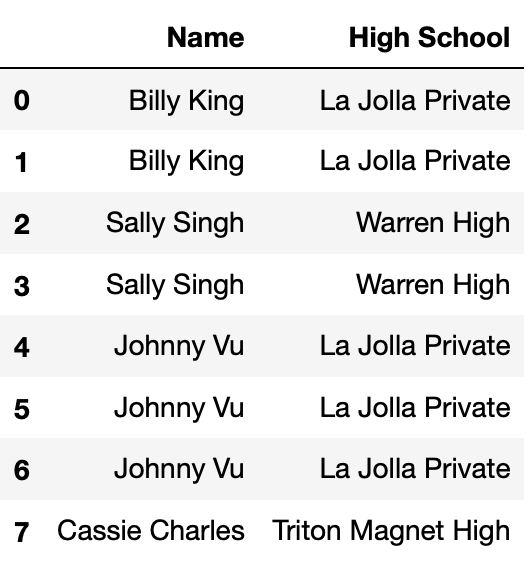
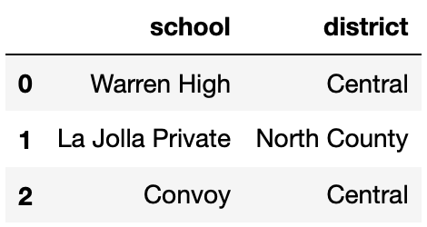

← return to study.practicaldsc.org
The problems in this worksheet are taken from past exams in similar
classes. Work on them on paper, since the exams you
take in this course will also be on paper.
We encourage you to
complete this worksheet in a live discussion section. Solutions will be
made available after all discussion sections have concluded. You don’t
need to submit your answers anywhere.
Note: We do not plan to
cover all problems here in the live discussion section; the problems
we don’t cover can be used for extra practice.
The laptops DataFrame contains information on various
factors that influence the pricing of laptops. Each row represents a
laptop, and the columns are:
"Mfr" (str): the company that manufactures the laptop,
like “Apple” or “Dell”."Model" (str): the model name of the laptop, such as
“MacBook Pro”."OS" (str): the operating system, such as “macOS” or
“Windows 11”."Screen Size" (float): the diagonal length of the
screen, in inches."Price" (float): the price of the laptop, in
dollars.Without using groupby, write an
expression that evaluates to the average price of laptops with the
"macOS" operating system (the same quantity as above).
Answer:
laptops.loc[laptops["OS"] == "macOS", "Price"].mean()
Using groupby, write an expression that
evaluates to the average price of laptops with the "macOS"
operating system.
Answer:
laptops.groupby("OS")["Price"].mean().loc["macOS"]
You are given a DataFrame called books that contains
columns 'author' (string), 'title' (string),
'num_chapters' (int), and 'publication_year'
(int).
Suppose that after doing books.groupby('author').max(),
one row says
| author | title | num_chapters | publication_year |
|---|---|---|---|
| Charles Dickens | Oliver Twist | 53 | 1838 |
Based on this data, can you conclude that Charles Dickens is the alphabetically last of all author names in this dataset?
Yes
No
Answer: No
When we group by 'author', all books by the same author
get aggregated together into a single row. The aggregation function is
applied separately to each other column besides the column we’re
grouping by. Since we’re grouping by 'author' here, the
'author' column never has the max() function
applied to it. Instead, each unique value in the 'author'
column becomes a value in the index of the grouped DataFrame. We are
told that the Charles Dickens row is just one row of the output, but we
don’t know anything about the other rows of the output, or the other
authors. We can’t say anything about where Charles Dickens falls when
authors are ordered alphabetically (but it’s probably not last!)
Based on this data, can you conclude that Charles Dickens wrote Oliver Twist?
Yes
No
Answer: Yes
Grouping by 'author' collapses all books written by the
same author into a single row. Since we’re applying the
max() function to aggregate these books, we can conclude
that Oliver Twist is alphabetically last among all books in the
books DataFrame written by Charles Dickens. So Charles
Dickens did write Oliver Twist based on this data.
Based on this data, can you conclude that Oliver Twist has 53 chapters?
Yes
No
Answer: No
The key to this problem is that groupby applies the
aggregation function, max() in this case, independently to
each column. The output should be interpreted as follows:
books written by Charles Dickens,
Oliver Twist is the title that is alphabetically last.books written by Charles Dickens, 53
is the greatest number of chapters.books written by Charles Dickens,
1838 is the latest year of publication.However, the book titled Oliver Twist, the book with 53 chapters, and the book published in 1838 are not necessarily all the same book. We cannot conclude, based on this data, that Oliver Twist has 53 chapters.
Based on this data, can you conclude that Charles Dickens wrote a book with 53 chapters that was published in 1838?
Yes
No
Answer: No
As explained in the previous question, the max()
function is applied separately to each column, so the book written by
Charles Dickens with 53 chapters may not be the same book as the book
written by Charles Dickens published in 1838.
The DataFrame items describes various items available to
collect or purchase using bells, the currency used in the game
Animal Crossing: New Horizons.
For each item, we have:
"Item" (str): The name of the item."Cost" (int): The cost of the item in bells. Items that
cost 0 bells cannot be purchased and must be collected through other
means (such as crafting)."Location" (str): The store or action through which the
item can be obtained.The first 6 rows of items are below, though
items has more rows than are shown here.
The DataFrame keepers has 5 rows, each of which
represent a different shopkeeper in the Animal Crossing: New
Horizons universe.
keepers is shown below in its entirety.

How many rows are in the following DataFrame? Give your answer as an integer.
keepers.merge(items.iloc[:6],
left_on="Store",
right_on="Location")Answer: 10
Since the type of join is not specified, this is an inner join. Each
row in keepers is merged with each row in
items only if 'Store' in keepers
equals 'Location' in items. Each row in
keepers has the following number of merges: row 0 has 1,
row 1 has 3, row 2 has 3, row 3 has 0 (there are no rows in
items with 'Location' equal to ‘Kicks Shoe
Store’), and row 4 has 3.
1 + 3 + 3 + 0 + 3 = 10
Suppose we create a DataFrame called midwest containing
Nishant’s flights departing from DTW, ORD, and MKE. midwest
has 10 rows; the bar chart below shows how many of these 10 flights
departed from each airport.
Consider the DataFrame that results from merging midwest
with itself, as follows:
double_merge = midwest.merge(midwest, left_on='FROM', right_on='FROM')How many rows does double_merge have?
Answer: 38
There are two flights from DTW. When we merge midwest
with itself on the 'FROM' column, each of these flights
gets paired up with each of these flights, for a total of four rows in
the output. That is, the first flight from DTW gets paired with both the
first and second flights from DTW. Similarly, the second flight from DTW
gets paired with both the first and second flights from DTW.
Following this logic, each of the five flights from ORD gets paired with each of the five flights from ORD, for an additional 25 rows in the output. For MKE, there will be 9 rows in the output. The total is therefore 2^2 + 5^2 + 3^2 = 4 + 25 + 9 = 38 rows.
In this problem, we will be using the following DataFrame
students, which contains various information about high
school students and the university/universities they applied to.

The columns are:
'Name' (str): the name of the student.'High School' (str): the High School that the student
attended.'Email' (str): the email of the student.'GPA' (float): the GPA of the student.'AP' (int): the number of AP exams that the student
took.'University' (str): the name of the university that the
student applied to.'Admit' (str): the acceptance status of the student
(where ‘Y’ denotes that they were accepted to the university and ‘N’
denotes that they were not).The rows of 'student' are arranged in no particular
order. The first eight rows of 'student' are shown above
(though 'student' has many more rows than pictured
here).
Fill in the blank so that the result evaluates to a Series indexed by
"Email" that contains a list of the
universities that each student was admitted to. If a
student wasn’t admitted to any universities, they should have an empty
list.
students.groupby("Email").apply(_____)What goes in the blank?
Answer:
lambda df: df.loc[df["Admit"] == "Y", "University"].tolist()
Which of the following blocks of code correctly assign
max_AP to the maximum number of APs taken by a student who
was rejected by UC San Diego?
Option 1:
cond1 = students["Admit"] == "N"
cond2 = students["University"] == "UC San Diego"
max_AP = students.loc[cond1 & cond2, "APs"].sort_values().iloc[-1]Option 2:
cond1 = students["Admit"] == "N"
cond2 = students["University"] == "UC San Diego"
d3 = students.groupby(["University", "Admit"]).max().reset_index()
max_AP = d3.loc[cond1 & cond2, "APs"].iloc[0]Option 3:
p = students.pivot_table(index="Admit",
columns="University",
values="APs",
aggfunc="max")
max_AP = p.loc["N", "UC San Diego"]Option 4:
# .last() returns the element at the end of a Series it is called on
groups = students.sort_values(["APs", "Admit"]).groupby("University")
max_AP = groups["APs"].last()["UC San Diego"]Select all that apply. There is at least one correct option.
Option 1
Option 2
Option 3
Option 4
Answer: Option 1 and Option 3
Option 1 works correctly, it is probably the most straightforward
way of answering the question. cond1 is True
for all rows in which students were rejected, and cond2 is
True for all rows in which students applied to UCSD. As
such, students.loc[cond1 & cond2] contains only the
rows where students were rejected from UCSD. Then,
students.loc[cond1 & cond2, "APs"].sort_values() sorts
by the number of "APs" taken in increasing order, and
.iloc[-1] gets the largest number of "APs"
taken.
Option 2 doesn’t work because the lengths of cond1
and cond2 are not the same as the length of
d3, so this causes an error.
Option 3 works correctly. For each combination of
"Admit" status ("Y", "N",
"W") and "University" (including UC San
Diego), it computes the max number of "APs". The usage of
.loc["N", "UC San Diego"] is correct too.
Option 4 doesn’t work. It currently returns the maximum number of
"APs" taken by someone who applied to UC San Diego; it does
not factor in whether they were admitted, rejected, or
waitlisted.
Currently, students has a lot of repeated information —
for instance, if a student applied to 10 universities, their GPA appears
10 times in students.
We want to generate a DataFrame that contains a single row for each
student, indexed by "Email", that contains their
"Name", "High School", "GPA", and
"APs".
One attempt to create such a DataFrame is below.
students.groupby("Email").aggregate({"Name": "max",
"High School": "mean",
"GPA": "mean",
"APs": "max"})There is exactly one issue with the line of code above. In one sentence, explain what needs to be changed about the line of code above so that the desired DataFrame is created.
Answer: The problem right now is that aggregating
High School by mean doesn’t work since you can’t aggregate a column with
strings using "mean". Thus changing it to something that
works for strings like "max" or "min" would
fix the issue.
Consider the following snippet of code.
pivoted = students.assign(Admit=students["Admit"] == "Y") \
.pivot_table(index="High School",
columns="University",
values="Admit",
aggfunc="sum")Some of the rows and columns of pivoted are shown
below.

No students from Warren High were admitted to Columbia or Stanford.
However,
pivoted.loc["Warren High", "Columbia"] and
pivoted.loc["Warren High", "Stanford"] evaluate to
different values. What is the reason for this difference?
Some students from Warren High applied to Stanford, and some others applied to Columbia, but none applied to both.
Some students from Warren High applied to Stanford but none applied to Columbia.
Some students from Warren High applied to Columbia but none applied to Stanford.
The students from Warren High that applied to both Columbia and Stanford were all rejected from Stanford, but at least one was admitted to Columbia.
When using pivot_table, pandas was not able
to sum strings of the form "Y", "N", and
"W", so the values in pivoted are
unreliable.
Answer: Option 3
pivoted.loc["Warren High", "Stanford"] is
NaN because there were no rows in students in
which the "High School" was "Warren High" and
the "University" was "Stanford", because
nobody from Warren High applied to Stanford. However,
pivoted.loc["Warren High", "Columbia"] is not
NaN because there was at least one row in
students in which the "High School" was
"Warren High" and the "University" was
"Columbia". This means that at least one student from
Warren High applied to Columbia.
Option 3 is the only option consistent with this logic.
The DataFrame dogs, contains one row for every
registered pet dog in Zurich, Switzerland in 2017.
The first few rows of dogs are shown below, but
dogs has many more rows than are shown.

"owner_id" (int): A unique ID for each owner. Note
that, for example, there are two rows in the preview for
4215, meaning that owner has at least 2 dogs.
Assume that if an "owner_id" appears in
dogs multiple times, the corresponding
"owner_age", "owner_sex", and
"district" are always the same."owner_age" (str): The age group of the owner; either
"11-20", "21-30", …, or "91-100"
(9 possibilities in total)."owner_sex" (str): The birth sex of the owner; either
"m" (male) or "f" (female)."district" (int): The city district the owner lives in;
a positive integer between 1 and 12
(inclusive)."primary_breed" (str): The primary breed of the
dog."secondary_breed" (str): The secondary breed of the
dog. If this column is not null, the dog is a “mixed breed” dog;
otherwise, the dog is a “purebred” dog."dog_sex" (str): The birth sex of the dog; either
"m" (male) or "f" (female)."birth_year" (int): The birth year of the dog.In this question, assume that there are more than 12 districts in
dogs.
Suppose we merge the dogs DataFrame with itself as
follows.
# on="x" is the same as specifying both left_on="x" and right_on="x".
double = dogs.merge(dogs, on="district")
# sort_index sorts a Series in increasing order of its index.
square = double["district"].value_counts().value_counts().sort_index()The first few rows of square are shown below.
1 5500
4 215
9 40In dogs, there are 12 rows with a
"district" of 8. How many rows of
double have a "district" of 8?
Give your answer as a positive integer.
Answer: 144
When we merge dogs with dogs on
"district", each 8 in the first
dogs DataFrame will be combined with each 8 in
the second dogs DataFrame. Since there are 12 in the first
and 12 in the second, there are 12 \cdot 12 =
144 combinations.
What does the following expression evaluate to? Give your answer as a positive integer.
dogs.groupby("district").filter(lambda df: df.shape[0] == 3).shape[0]Hint: Unlike in 5.1, your answer to 5.2 depends on the values in
square.
Answer: 120
square is telling us that:
dogs.dogs (2x,
not 4x, because of the logic explained in the 5a rubric item).dogs.The expression given in this question is keeping all of the rows corresponding to districts that appear 3 times. There are 40 districts that appear 3 times. So, the total number of rows in this DataFrame is 40 \cdot 3 = 120.
Kyle and Yutong are trying to decide where they’ll study on campus and start flipping a Michigan-themed coin, with a picture of the Michigan Union on the heads side and a picture of the Shapiro Undergraduate Library (aka the UgLi) on the tails side.

Kyle flips the coin 21 times and sees 13 heads and 8 tails. He stores
this information in a DataFrame named kyle that has 21 rows
and 2 columns, such that:
The "flips" column contains "Heads" 13
times and "Tails" 8 times.
The "Markley" column contains "Kyle" 21
times.
Then, Yutong flips the coin 11 times and sees 4 heads and 7 tails.
She stores this information in a DataFrame named yutong
that has 11 rows and 2 columns, such that:
The "flips" column contains "Heads" 4
times and "Tails" 7 times.
The "MoJo" column contains "Yutong" 11
times.
How many rows are in the following DataFrame? Give your answer as an integer.
kyle.merge(yutong, on="flips")Hint: The answer is less than 200.
Answer: 108
Since we used the argument on="flips, rows from
kyle and yutong will be combined whenever they
have matching values in their "flips" columns.
For the kyle DataFrame:
"Heads" in the
"flips" column."Tails" in the
"flips" column.For the yutong DataFrame:
"Heads" in the
"flips" column."Tails" in the
"flips" column.The merged DataFrame will also only have the values
"Heads" and "Tails" in its
"flips" column.
"Heads" rows from kyle will each
pair with the 4 "Heads" rows from yutong. This
results in 13 \cdot 4 = 52 rows with
"Heads""Tails" rows from kyle will each
pair with the 7 "Tails" rows from yutong. This
results in 8 \cdot 7 = 56 rows with
"Tails".Then, the total number of rows in the merged DataFrame is 52 + 56 = 108.
Let A be your answer to the previous part. Now, suppose that:
kyle contains an additional row, whose
"flips" value is "Total" and whose
"Markley" value is 21.
yutong contains an additional row, whose
"flips" value is "Total" and whose
"MoJo" value is 11.
Suppose we again merge kyle and yutong on
the "flips" column. In terms of A, how many rows are in the new merged
DataFrame?
A
A+1
A+2
A+4
A+231
Answer: A+1
The additional row in each DataFrame has a unique
"flips" value of "Total". When we merge on the
"flips" column, this unique value will only create a single
new row in the merged DataFrame, as it pairs the "Total"
from kyle with the "Total" from
yutong. The rest of the rows are the same as in the
previous merge, and as such, they will contribute the same number of
rows, A, to the merged DataFrame. Thus,
the total number of rows in the new merged DataFrame will be A (from the original matching rows) plus 1
(from the new "Total" rows), which sums up to A+1.
The h table records addresses within San Diego. Only 50
addresses are recorded. The index of the DataFrame contains the numbers
1-50 as unique integers.
"number" (int): Street address number"street" (str): Street nameFill in the Python code to create a DataFrame containing the
proportion of 4-digit address numbers for each unique street in
h.
def foo(x):
lengths = __(a)__
return (lengths == 4).mean()
h.groupby(__(b)__).__(c)__(foo)Answer:
(a): x.astype(str).str.len()
(b): 'street'
(c): agg
Define small_students to be the DataFrame with 8 rows
and 2 columns shown directly below, and define districts to
be the DataFrame with 3 rows and 2 columns shown below
small_students.
 
Consider the DataFrame merged, defined below.
merged = small_students.merge(districts,
left_on="High School",
right_on="school",
how="outer")How many total NaN values does merged
contain? Give your answer as an integer.
Answer: 4
merged is shown below.
The DataFrame tv_excl contains all of the information we
have for TV shows that are available to stream exclusively on a
single streaming service. The "Service" column contains the
name of the one streaming service that the TV show is available for
streaming on.
The first few rows of tv_excl are shown below (though,
of course, tv_excl has many more rows than are pictured
here). Note that Being Erica is not in tv_excl,
since it is available to stream on multiple services.
The DataFrame counts, shown in full below, contains the
number of TV shows for every combination of "Age" and
"Service".

Given the above information, what does the following expression evaluate to?
tv_excl.groupby(["Age", "Service"]).sum().shape[0]4
5
12
16
18
20
25
Answer: 18
Note that the DataFrame counts is a pivot table, created
using
tv_excl.pivot_table(index="Age", columns="Service", aggfunc="size").
As we saw in lecture, pivot tables contain the same information as the
result of grouping on two columns.
The DataFrame tv_excl.groupby(["Age", "Service"]).sum()
will have one row for every unique combination of "Age" and
"Service" in tv_excl. (The same is true even
if we used a different aggregation method, like .mean() or
.max().) As counts shows us,
tv_excl contains every possible combination of a single
element in {"13+", "16+", "18+",
"7+", "all"} with a single element in
{"Disney+", "Hulu", "Netflix",
"Prime Video"}, except for ("13+",
"Disney+") and ("18+",
"Disney+"), which were not present in tv_excl;
if they were, they would have non-null values in
counts.
As such, tv_excl.groupby(["Age", "Service"]).sum() will
have 20 - 2 = 18 rows, and
tv_excl.groupby(["Age", "Service"]).sum().shape[0]
evaluates to 18.
The DataFrame flights contains information about recent
flights, with each row representing a specific flight and the following
columns:
"flight num" (str): The unique code of the flight,
consisting of a two-character airline designator followed by 1 to 4
digits (e.g., "UA1989")."airline" (str): The airline name (e.g.,
"United")."departure" (str): The code for the airport from which
the flight departs (e.g., "SAN")."arrival" (str): The code for the airport at which the
flight arrives (e.g., "LAX").Suppose we have another DataFrame more_flights which
contains the same columns as flights, but different rows.
Define merged as follows.
merged = flights.merge(more_flights, on = "airline")Suppose that in merged, there are 108 flights where the
airline is "United", and in more_flights,
there are 12 flights where the airline is "United". If
flights has 15 rows in total, how many of these rows are
not for "United" flights? Give your answer
as an integer.
Answer: 6
We are merging DataFrames flights and
more_flights according to the airline each flight belongs
to. All the "United" flights in more_flights
will be merged with all the "United" flights in
flights, which we know gives us 108 total flights. We also
know that there are 12 "United" flights in
more_flights. To find the number of "United"
flights in flights, we simply need to divide the total
number of "United" flights in merged by the
number of "United" flights in more_flights,
which is 108/12 = 9. If flights has a total of 15 rows,
then the total number of non-United rows is equal to 15 - 9 = 6.
For your convenience, the first few rows of tv are shown
again below.

For the purposes of this question only, suppose we have also access
to another similar DataFrame, movies, which contains
information about a variety of movies. The information we have for each
movie in movies is the same as the information we have for
each TV show in tv, except for IMDb ratings, which are
missing from movies.
The first few rows of movies are shown below (though
movies has many more rows than are pictured here).
The function total_null, defined below, takes in a
DataFrame and returns the total number of null values in the
DataFrame.
total_null = lambda df: df.isna().sum().sum()Consider the function delta, defined below.
def delta(a, b):
tv_a = tv.head(a)
movies_b = movies.head(b)
together = pd.concat([tv_a, movies_b])
return total_null(together) - total_null(tv_a) - total_null(movies_b)Which of the following functions is equivalent to
delta?
lambda a, b: a
lambda a, b: b
lambda a, b: 9 * a
lambda a, b: 8 * b
lambda a, b: min(9 * a, 8 * b)
Answer: lambda a, b: b
Let’s understand what each function does.
total_null just counts all the null values in a
DataFrame.delta concatenates the first a rows of
tv with the first b rows of
movies vertically, that is, on top of one
another (over axis 0). It then returns the difference between the total
number of null values in the concatenated DataFrame and the total number
of null values in the first a rows of tv and
first b rows of movies – in other words, it
returns the number of null values that were added as a result of
the concatenation.The key here is recognizing that tv and
movies have all of the same column names,
except movies doesn’t have an
"IMDb" column. As a result, when we concatenate, the
"IMDb" column will contain null values for every row that
was originally from movies. Since b rows from
movies are in the concatenated DataFrame, b
new null values are introduced as a result of the concatenation, and
thus lambda, a, b: b does the same thing as
delta.
Fill in the blank to complete the implementation of the function
size_of_merge, which takes a string col,
corresponding to the name of a single column that is
shared between tv and movies, and returns the
number of rows in the DataFrame
tv.merge(movies, on=col).
For instance, size_of_merge("Year") should return
the number of rows in tv.merge(movies, on="Year").
The purpose of this question is to have you think conceptually
about how merges work. As such, solutions containing
merge or concat will receive 0
points.
What goes in the blank below?
def size_of_merge(col):
return (____).sum()Hint: Consider the behavior below.
>>> s1 = pd.Series({'a': 2, 'b': 3})
>>> s2 = pd.Series({'c': 4, 'a': -1, 'b': 4})
>>> s1 * s2
a -2.0
b 12.0
c NaN
dtype: float64Answer:
tv[col].value_counts() * movies[col].value_counts()
tv.merge(movies, on=col) contains one row for every
“match” between tv[col] and movies[col].
Suppose, for example, that col="Year". If
tv["Year"] contains 30 values equal to 2019, and
movies["Year"] contains 5 values equal to 2019,
tv.merge(movies, on="Year") will contain 30 \cdot 5 = 150 rows in which the
"Year" value is equal to 2019 – one for every combination
of a 2019 row in tv and a 2019 row in
movies.
tv["Year"].value_counts() and
movies["Year"].value_counts() contain, respectively, the
frequencies of the unique values in tv["Year"] and
movies["Year"]. Using the 2019 example from above,
tv["Year"].value_counts() * movies["Year"].value_counts()
will contain a row whose index is 2019 and whose value is 150, with
similar other entries for the other years in the two Series. (The hint
is meant to demonstrate the fact that no matter how the two Series are
sorted, the product is done element-wise by matching up indexes.) Then,
(tv["Year"].value_counts() * movies["Year"].value_counts()).sum()
will sum these products across all years, ignoring null values.
As such, the answer we were looking for is
tv[col].value_counts() * movies[col].value_counts()
(remember, "Year" was just an example for this
explanation).
For each day in May 2022, the DataFrame streams contains
the number of streams for each of the “Top 200" songs on Spotify that
day — that is, the number of streams for the 200 songs with the most
streams on Spotify that day. The columns in streams are as
follows:
"date": the date the song was streamed
"artist_names": name(s) of the artists who created
the song
"track_name": name of the song
"streams": the number of times the song was streamed
on Spotify that day
The first few rows of streams are shown below. Since
there were 31 days in May and 200 songs per day, streams
has 6200 rows in total.

Note that:
streams is already sorted in a very particular way —
it is sorted by "date" in reverse chronological
(decreasing) order, and, within each "date", by
"streams" in increasing order.
Many songs will appear multiple times in streams,
because many songs were in the Top 200 on more than one day.
Complete the implementation of the function song_by_day,
which takes in an integer day between 1 and 31
corresponding to a day in May, and an integer n, and
returns the song that had the n-th most streams on
day. For instance,
song_by_day(31, 199) should evaluate to
"pepas", because "pepas" was the 199th most
streamed song on May 31st.
Note: You are not allowed to sort within
song_by_day — remember, streams is already
sorted.
def song_by_day(day, n):
day_str = f"2022-05-{str(day).zfill(2)}"
day_only = streams[__(a)__].iloc[__(b)__]
return __(c)__What goes in each of the blanks?
Answer: a) streams['date'] == day_str,
b) (200 - n), c) day_only['track_name']
The first line in the function gives us an idea that maybe later on
in the function we’re going to filter for all the days that match the
given data. Indeed, in blank a, we filter for all the rows in which the
'date' column matches day_str. In blank b, we
could access directly access the row with the n-th most
stream using iloc. (Remember, the image above shows us that the streams
are sorted by most streamed in ascending order, so to find the
n-th most popular song of a day, we simply do
200-n). Finally, to return the track name, we could simply
do day_only['track_name'].
Below, we define a DataFrame pivoted.
pivoted = streams.pivot_table(index="track_name", columns="date",
values="streams", aggfunc=np.max)After defining pivoted, we define a Series
mystery below.
mystery = 31 - pivoted.apply(lambda s: s.isna().sum(), axis=1)mystery.loc["pepas"] evaluates to 23. In one sentence,
describe the relationship between the number 23 and the song
"pepas" in the context of the streams dataset.
For instance, a correctly formatted but incorrect answer is “I listened
to the song "pepas" 23 times today."
Answer: See below.
pivoted.apply(lambda s: s.isna().sum(), axis=1) computes
the number of days that a song was not on the Top 200, so
31 - pivoted.apply(lambda s: s.isna().sum(), axis=1)
computes the number of days the song was in the Top 200. As such, the
correct interpretation is that "pepas" was in the
Top 200 for 23 days in May.
In defining pivoted, we set the keyword argument
aggfunc to np.max. Which of the following
functions could we have used instead of np.max without
changing the values in pivoted? Select all that
apply.
np.mean
np.median
len
lambda df: df.iloc[0]
None of the above
Answer: Option A, B and D
For each combination of "track_name" and
"date", there is just a single value — the number of
streams that song received on that date. As such, the
aggfunc needs to take in a Series containing a single
number and return that same number.
The mean and median of a Series containing a single number is equal to that number, so the first two options are correct.
The length of a Series containing a single number is 1, no matter what that number is, so the third option is not correct.
lambda df: df.iloc[0] takes in a Series and returns
the first element in the Series, which is the only element in the
Series. This option is correct as well. (The parameter name
df is irrelevant.)
Below, we define another DataFrame another_mystery.
another_mystery = (streams.groupby("date").last()
.groupby(["artist_names", "track_name"])
.count().reset_index())another_mystery has 5 rows. In one sentence, describe
the significance of the number 5 in the context of the
streams dataset. For instance, a correctly formatted but
incorrect answer is “There are 5 unique artists in
streams." Your answer should not include the word”row".
Answer: See below.
1in Since streams is sorted by "date" in
descending order and, within each "date", by
"streams" in ascending order,
streams.groupby("date").last() is a DataFrame containing
the song with the most "streams" on each day in May. In
other words, we found the “top song" for each day. (The DataFrame we
created has 31 rows.)
When we then execute
.groupby(["artist_names", "track_name"]).count(), we create
one row for every unique combination of song and artist, amongst the
“top songs". (If no two artists have a song with the same name, this is
the same as creating one row for every unique song.) Since there are 5
rows in this new DataFrame (resetting the index doesn’t do anything
here), it means that there were only 5 unique songs that were
ever the “top song" in a day in May; this is the correct
interpretation.